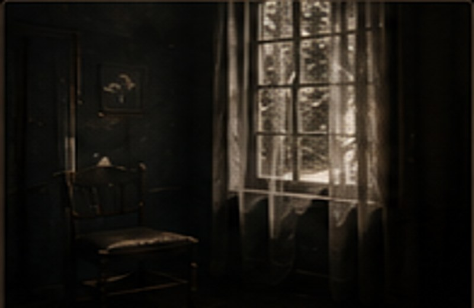
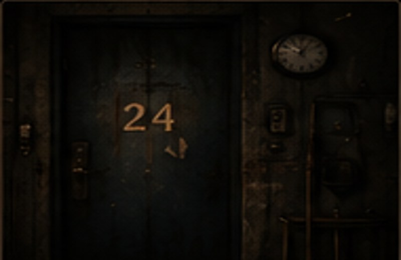
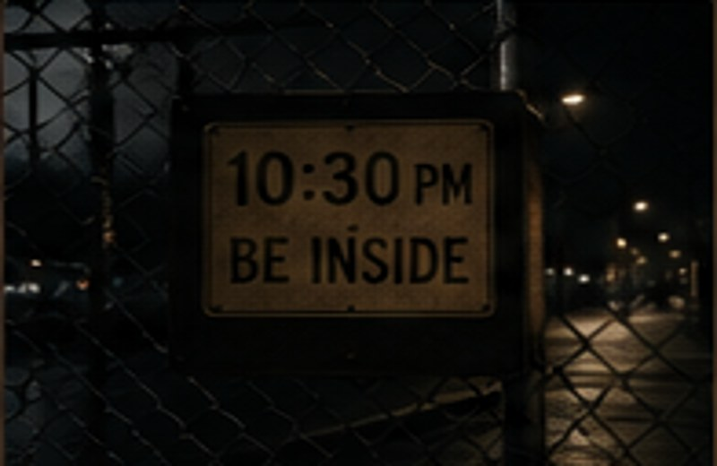
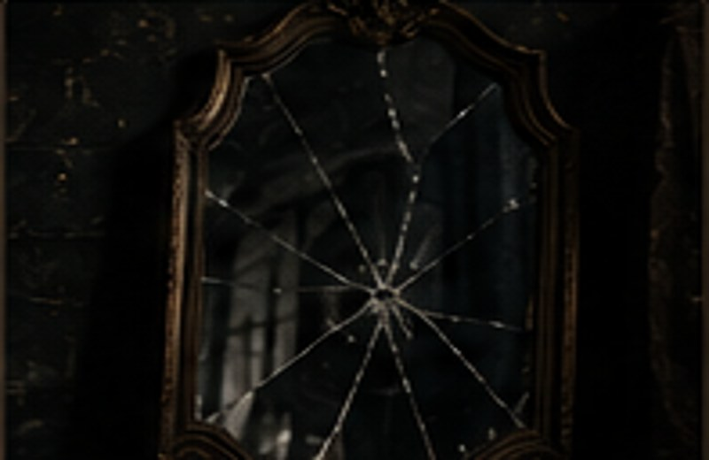
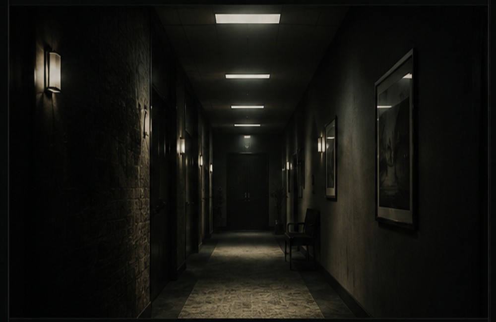

Stories by Mo
Stories that linger long after the final sentence.
Enter the libraryLove & Darkness
I've always enjoyed the light, the joy, the happiness. The comfort in being able to see the light and know what’s on the other side. To spend…
Short Stories
Quiet thoughts, sharp turns, and ordinary moments that become something else.
Love & Darkness
I've always enjoyed the light, the joy, the happiness. The comfort in being able to see the light and know what’s on the other side. To spend…
Newly Weds
It was finally the day I had been waiting years for. The day I get married to the woman of my dreams, the love of my life. She made me feel…

Casket
It’s only when I'm lying in my casket that I see my husband that has cheated on me for years, crying and weeping, saying that he’s sorry for…

Silence
It could be loud or quiet. Soft or hard. Awkward or comforting. Yet it was all the same thing. Silence. Why could one word be felt in so many…
The Truth
I've always known I was meant for more. To have a greater life. That’s why I have such a successful business and I’m rich. I built something for…
Writers
Writing. I enjoy writing. The characters, the plots, I enjoy writing. The stories I made, I enjoy writing. No one can tell me that I'm wrong…

24
1234.1234.1234.1234.1234.1234.1234.1234.1234.1234.1243.2341.2134.1234. 24 hours in one room. One singular room. 4 walls. 1 door. 1 window. 24…
Ordinary
He was just a normal person most people wouldn't recognize him. He was too normal. Too sane. Too nerdy. Why would anyone notice someone like…
Dead?
I told myself I was fine and my body disagreed. But I couldn't figure out why. I felt ok. Nothing was wrong with me. I only had a couple of…
Problems
I realized that I was the problem. Why everyone would leave me. Why no one ever wanted to be my friend. I was the problem all along. But for so…
Happiness
This is a letter I wrote but never got the chance to send. I realized I didn't miss you, I missed who I was with you. I was happy. Cheerful. I…

Rules
Everyone follows the same rule. You must be inside by 10:30pm. No one knows what happens if you stay out later. No one has ever dared to test…

Mirrors
I turned around and didn't recognize the person in the mirror. The person I so carefully put together to make sure everyone would like me. The…
Music
It’s a way to escape from reality. To feel something else. To have something to relate to. It’s almost like someone is talking to you when all…
Flowers
The flowers died on Monday—the same day everything that mattered most came crashing down.

Hallway
Every patient described the same hallway from their dreams—down to the lights, the wall, and the smell.
Mo
I’m Mo, a writer exploring emotion, identity, fear, grief, and the quiet moments people usually overlook.
My stories are brief by design—small enough to read in a few minutes, but written to stay with you much longer.